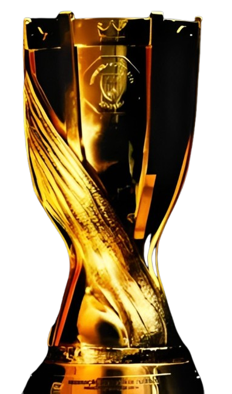
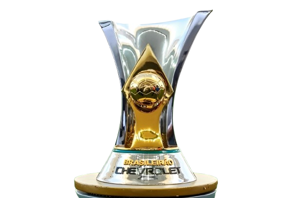
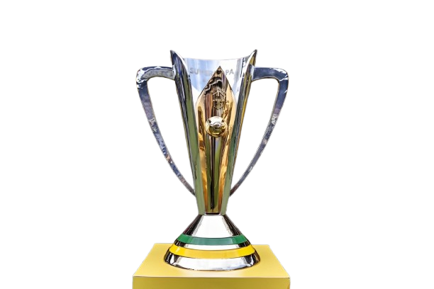
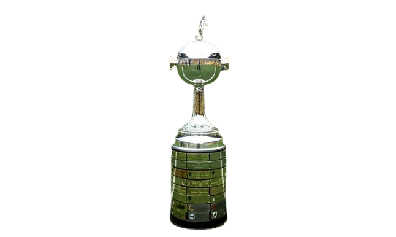
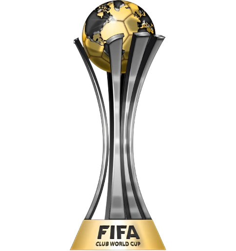
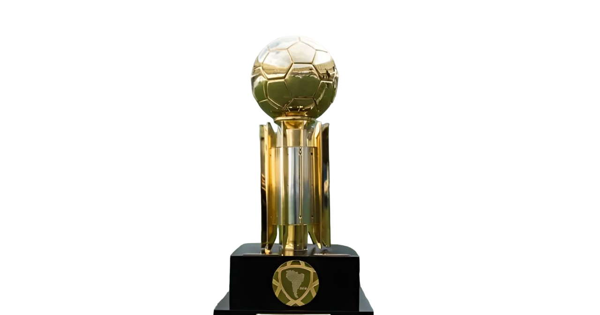
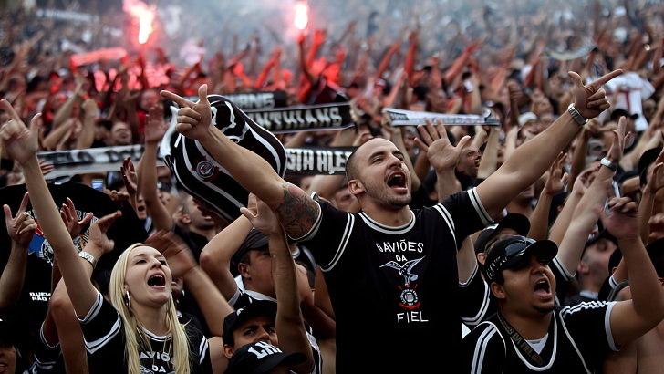
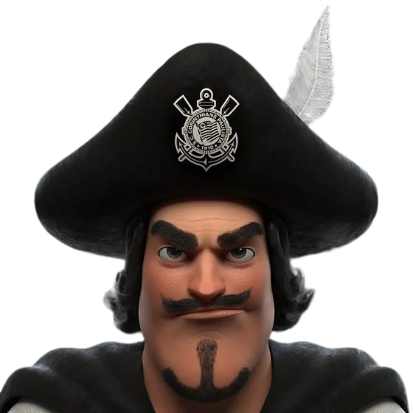
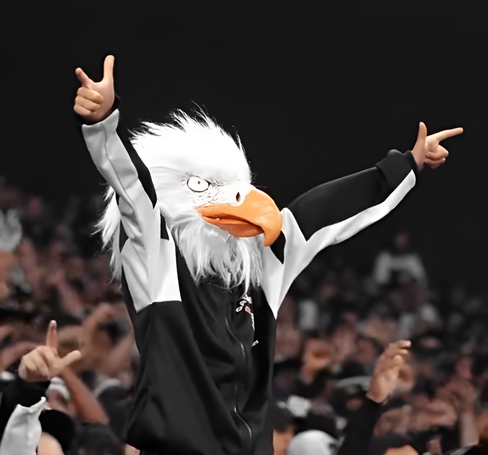

O Sport Club Corinthians Paulista foi fundado em 1º de setembro de 1910 por um grupo de operários do bairro
Bom Retiro, em São Paulo. Inspirados pelo time inglês Corinthian Football Club, que excursionava pelo Brasil
na época, os fundadores decidiram criar um clube que representasse as classes populares, já que o futebol
era até então dominado por elites. Reunidos sob a luz de um lampião na Rua José Paulino, nomes como Joaquim
Ambrósio, Carlos Silva, Rafael Perrone, Antônio Pereira e Anselmo Correia deram início à história de um dos
clubes mais populares do Brasil. Desde o início, o Corinthians se destacou por sua ligação com o povo e
rapidamente conquistou seu espaço no cenário esportivo paulista.


O Corinthians fez sua estreia no Campeonato Paulista em 20 de abril de 1913, enfrentando o Germânia, uma das equipes mais fortes da época. O jogo foi realizado no campo do Parque Antártica, e o Corinthians surpreendeu ao vencer por 3 a 2, com gols de Luiz Fabi e Casemiro do Amaral (2). Essa partida marcou a entrada do clube no cenário oficial do futebol paulista, consolidando seu papel como um representante das classes trabalhadoras. Apesar das dificuldades iniciais, o time mostrou determinação e espírito competitivo, características que se tornariam marcas registradas do clube ao longo de sua história.
Entre 1954 e 1977, o Corinthians viveu o maior jejum de títulos de sua história, um período de 23 anos sem conquistas importantes. Apesar das dificuldades dentro de campo, esse foi um momento decisivo para o fortalecimento da identidade do clube. Longe de se afastar, a torcida corinthiana cresceu de forma impressionante, mostrando uma lealdade inabalável que se tornaria um dos principais traços da Fiel. Durante o jejum, o apoio fervoroso da torcida foi evidenciado em diversos momentos, sendo o mais icônico a "Invasão Corinthiana" de 1976. Na semifinal do Campeonato Brasileiro contra o Fluminense, cerca de 70 mil torcedores viajaram ao Maracanã, transformando o estádio em um mar preto e branco. Esse evento marcou a história do futebol brasileiro e simbolizou a força de uma torcida que não abandona o clube, mesmo nos momentos mais difíceis. Quando o jejum foi finalmente quebrado em 1977, com a vitória sobre a Ponte Preta na final do Campeonato Paulista, a comemoração foi histórica. O gol de Basílio, que garantiu o título, não apenas encerrou anos de espera, mas também celebrou a relação única entre o Corinthians e sua torcida, que se manteve fiel e apaixonada, consolidando o clube como uma das maiores potências do futebol nacional.
A Democracia Corinthiana foi um movimento revolucionário que ocorreu entre 1982 e 1984, transformando a gestão e a cultura do Sport Club Corinthians Paulista. Em um período marcado pela ditadura militar no Brasil, o clube adotou práticas internas de autogestão e participação democrática, lideradas por jogadores como Sócrates, Wladimir, Casagrande e Zenon, além do diretor de futebol Adilson Monteiro Alves. Sob esse modelo, todas as decisões importantes do clube eram tomadas coletivamente, com votos igualitários de jogadores, comissão técnica e diretoria. Desde a escalação do time até questões administrativas, todos tinham voz. O lema "Ganhar ou perder, mas sempre com democracia" refletia o espírito do movimento, que ia além do futebol, tornando-se um símbolo de resistência e luta por liberdade no país. Em campo, a Democracia Corinthiana foi bem-sucedida, conquistando os Campeonatos Paulistas de 1982 e 1983. Fora dele, o movimento deixou um legado de engajamento político e social, inspirando debates sobre gestão participativa e o papel do esporte na sociedade. Embora tenha durado pouco tempo, a Democracia Corinthiana permanece como um dos capítulos mais emblemáticos da história do clube e do futebol brasileiro.
Campeonato Paulista (31 títulos)
Maior campeão paulista, com o primeiro título em 1914 e conquistas marcantes como a de 1977, que encerrou o
jejum de 23 anos.

Campeonato Brasileiro (7 títulos: 1990, 1998, 1999, 2005, 2011, 2015, 2017)
Primeira conquista em 1990, com Neto como destaque, e campanhas dominantes, como as de 2015 e 2017, sob
comando de Tite e Carille.

Copa do Brasil (3 títulos: 1995, 2009, 2018)
Títulos conquistados com elencos fortes, como o liderado por Marcelinho Carioca em 1995 e Ronaldo em 2009.

Supercopa do Brasil (1 título: 1991)
Vitória sobre o Flamengo, consagrando-se como o primeiro campeão da competição.

Copa Libertadores da América (1 título: 2012)
Conquista invicta, com destaque para o equilíbrio defensivo e os gols decisivos de Emerson Sheik na final
contra o Boca Juniors.

Mundial de Clubes da FIFA (2 títulos: 2000, 2012)
Primeiro campeão mundial reconhecido pela FIFA em 2000 e bicampeão em 2012, com vitória sobre o Chelsea e
atuação histórica de Cássio.

Recopa Sul-Americana (1 título: 2013)
Título conquistado sobre o São Paulo, reafirmando a supremacia continental.

A Neo Química Arena, inaugurada em 18 de maio de 2014, foi construída em Itaquera, zona leste de São Paulo,
para ser uma das sedes da Copa do Mundo de 2014. Com capacidade para 49 mil torcedores, é uma das arenas
mais modernas da América Latina.
O custo da obra ultrapassou R$ 1,2 bilhão, gerando uma dívida significativa para o Corinthians. O
financiamento envolveu empréstimos do BNDES e da Caixa Econômica Federal. Em 2020, o clube fechou um
contrato de R$ 300 milhões pelos naming rights com a Hypera Pharma, ajudando a reduzir parte das dívidas.
Desde a inauguração, a arena tem sido palco de grandes títulos e eventos culturais, consolidando-se como um
marco na história do clube e da zona leste paulistana.

A torcida do Corinthians é, sem dúvida, uma das mais apaixonadas e leais do mundo. Conhecida como a Fiel
Torcida, ela não apenas apoia o time em todas as situações, mas também possui uma relação profunda e
emocional com o clube. O amor pela equipe transcende os altos e baixos do futebol, e, ao longo dos anos, a
Fiel se mostrou imbatível no quesito apoio, especialmente em momentos difíceis.
A Fiel Torcida é famosa por não vaiar o clube, independentemente dos resultados. Mesmo durante o jejum de
títulos, nos momentos de dificuldades e em jogos complicados, o que se vê é uma torcida que aplaude, canta e
empurra o time para frente. A Fiel acredita no time e o apoia incondicionalmente, sempre em busca de um
futuro melhor, como se a vitória do Corinthians fosse também a vitória de cada corinthiano.
Além disso, a Fiel Torcida é conhecida por ser a torcida que leva o time para qualquer lugar do planeta.
Seja no Brasil ou fora do país, o Corinthians é acompanhado por uma legião de torcedores que viajam
quilômetros para apoiar o time. A dedicação da torcida é tamanha que, em jogos internacionais, a quantidade
de corinthianos presentes nas arquibancadas muitas vezes supera a dos próprios donos da casa, como aconteceu
na final do Mundial de 2012 contra o Chelsea, quando a presença da torcida corinthiana foi fundamental para
a conquista do título.
Falando das torcidas organizadas, a Gaviões da Fiel é uma das mais tradicionais e influentes. Não se
limitando apenas ao apoio nos estádios, a Gaviões é também uma grande representante da cultura do
Corinthians, estando presente em movimentos sociais, projetos de apoio à comunidade e até na organização do
Carnaval de São Paulo. Todos os anos, ela realiza um dos desfiles mais esperados da folia paulistana,
levando a paixão do Corinthians para os sambódromos e encantando milhões com sua energia e emoção.
Em resumo, a torcida do Corinthians é muito mais que um grupo de pessoas que apoia o time. Ela é uma família
unida por um amor incondicional, que ultrapassa as fronteiras do futebol e se reflete em todos os aspectos
da vida do clube. A Fiel Torcida é um fenômeno que, com seu apoio irrestrito, faz o Corinthians ser maior do
que qualquer outro time, representando um verdadeiro exército que, nos bons e maus momentos, nunca abandona
o seu time.

Mosqueteiro
O mascote Mosqueteiro foi criado em 1990, inspirando-se nos famosos Três Mosqueteiros da literatura. A ideia
por trás desse mascote era simbolizar a união e a coragem, características que sempre foram associadas ao
Corinthians e à sua torcida. Durante aquele ano, o time conquistou o Campeonato Paulista, e o mascote
Mosqueteiro foi adotado como um símbolo de luta, fraternidade e superação. A figura do Mosqueteiro reforça a
ideia de que, como no famoso lema “um por todos, e todos por um”, a equipe e sua torcida estão sempre
juntos, enfrentando qualquer adversidade. Ele tornou-se um símbolo de resistência, união e força,
representando tanto a equipe quanto a imensa Fiel Torcida.

Gavião
Já o mascote Gavião é diretamente relacionado à torcida organizada Gaviões da Fiel, uma das maiores e mais
tradicionais do clube. O Gavião foi escolhido como símbolo por representar a garra, a agilidade e a
determinação, características que refletem o espírito da torcida corinthiana. Ele também simboliza a
proteção, já que o gavião, como ave de rapina, é conhecido por sua capacidade de atacar com precisão e
proteção sobre o território. O mascote é muito querido pelos torcedores e representa a paixão incansável dos
fãs do Corinthians.
A Gaviões da Fiel é uma das torcidas organizadas mais influentes do Brasil, com presença constante em
estádios, eventos e até em projetos sociais. A escolha do gavião como mascote reflete o espírito aguerrido e
unido dessa torcida, que acompanha o Corinthians em qualquer circunstância, com apoio irrestrito ao time.
